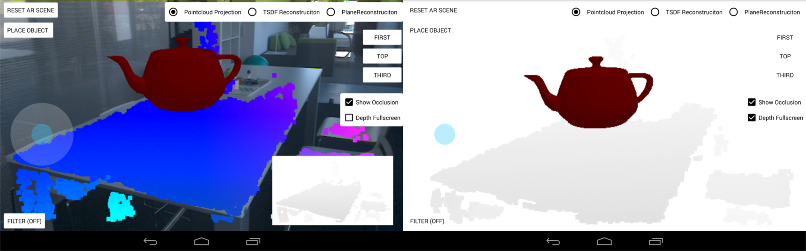
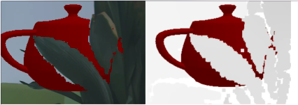
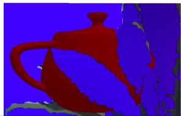
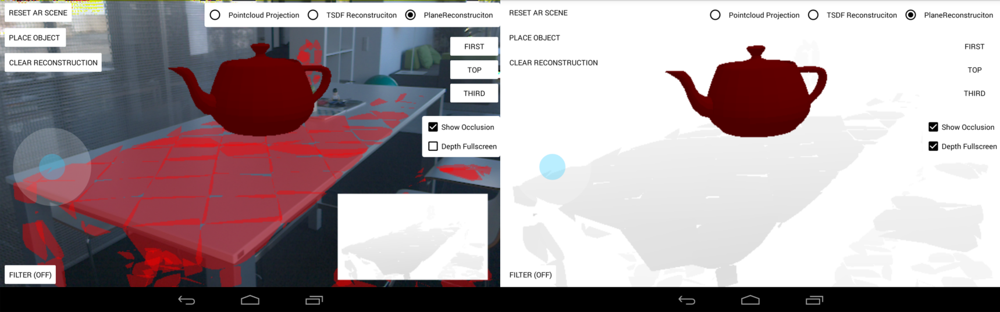
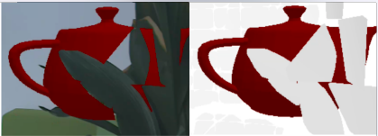
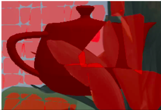
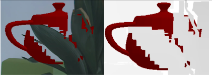
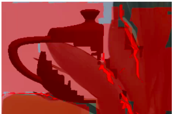

Project Tango - Master Thesis
"Optimization of augmented reality applications considering the depth information with Googles Project Tango"
Steffen Tröster
Cologne, Germany, 19.06.2016
Cologne University of Applied Sciences
Augmented Reality
Problem & Motivation

Solution: Using a Depthmap with the
Z-Buffer Method described by Wloka u. Anderson (1995)
Estimation of Depthinformation
Depthmap from Pointcloud Projection
Simple Approach

Demo


Plane Reconstruction
own combination of different approaches
Prototype implementation
Demo


TSDF Reconstruction
Chisel - Klingensmith u.a. (2015)
- optimized for mobile environments
- uses TSDF data structure
- saves memory because of spartial hashing
- Marching Cubes rendering
- corrects itself by Space Carving
Prototype implementation: OpenChisel
Demo


Guided Filter
surface approximations and noise is producing errors

Idea: filter on depth image frame buffer

demo

Prototyp

on GitHub
Demo
Open Questions and Optimizations
Optimizing Plane Reconstruction
introducitn features of Chisel
- Spatial Hashing
- Space Carving
- limiting the depth sensing (noise reduction)
How can planes be merged?
Optimizing Chisel
GPU Implementierung
- small voxel is increasing the level of detail
- Marching Cubes could be replaced by Raycasting
Microsoft Kinect Fusion (2015)
Questions for Guided Filter
- Some errors can be erased - some couldn't not, why?
- How to reduce depth artifacts? (8Bit - 16Bit?)
Optimization of Guided Filter
Implementation as OpenGL Fragmentshader?
Optimization of Depthinformation
Applying the filter before the integration into the reconstruction

Newcombe u.a. (2011)
alternative: Using more sophisticated Depth-Upsampling techniques
Shadow Vertex Shader Demo
Thanks!
Q&A
Vielen Dank!
Steffen Tröster
inovex Lab
@stetro
stroester@inovex.de
inovex GmbH
Schanzenstraße 6 - 20
51063 Cologne
Germany
inovex.de